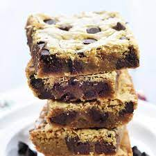
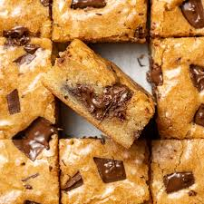
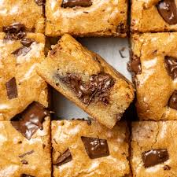

★
Blondies ★
Have a sweet tooth? This is the perfect recipe to wow your taste buds! Blondies are similar to Brownies, excpet we replace the cocoa powder with vanilla and contains brown sugar. I would compare it to a milk chocolate brownie.

Prep Time: 10 minutes
Cook Time: 35 minutes
Total Time: 45 minutes
Ingredients Needed
- 1⁄2 Cup of Unsalted Butter Melted
- 1 Cups Packed Brown Sugar
- 1 Egg + 1 Egg Yolk (At Room Temperature)
- 1 Tablespoon of Vanilla Extract
- 1 Cup of All Purpose Flour
- 1⁄4 Teaspoon of Baking Powder
- 1⁄2 Teaspoon of Salt
- 1 Cup of Semi Sweet Chocolate Chips
 

Cooking Directions
- Preheat oven to 350 ℉
- Line a 8x8 pan with parchment paper and set aside
- In a large bowl mix the melted butter and brown sugar
- Add the egg, egg yolk and vanilla extract and mix together
- In a separate bowl add the flour, baking powder, and salt and stir until well incorporated
- Transfer the wet ingridients into the dry ingredients and mix together
- Pour in chocolate chips and mix
- Pour the batter into the prepared pan and smooth out
- Place in the oven to bake for 25 to 30 minutes until edges are golden and a toothpick comes out mostly clean
- Allow to cool completely, then cut into squares
Helpful links:
Blondie Recepie
nutrition facts